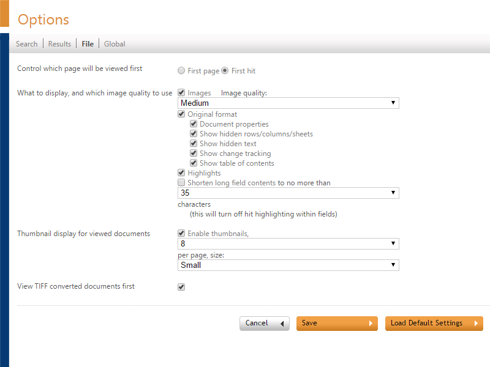
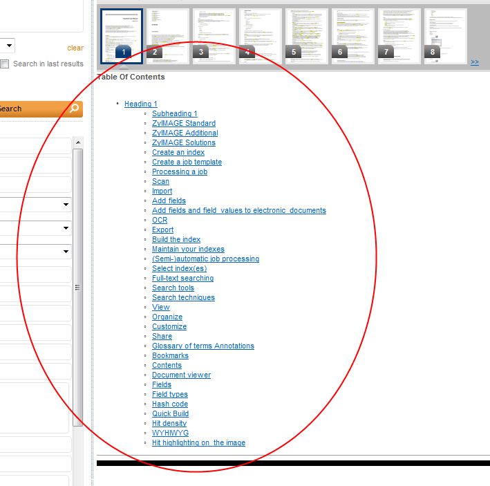

The File Options page controls what you will see when an item is opened.

Control which page will be viewed first
Choose whether you want to view the first page of a file, or the first hit within a file.
What to display, and which image quality to use
Images displays the image format. Choose the Image quality: low, medium, high, 200% enlarged, 280% enlarged, 400% enlarged and TIFF.
Specify whether the Original format must be displayed. If it is not displayed then an ASCII file is displayed containing the text of the original file. With the original format you can also view the following:
- Document properties. These are the document properties stored by the original program.
- Show hidden rows/columns/sheets. These are rows/columns/sheets normally hidden by the program used to create the file (for example Excel).
- Show hidden text. This is text normally hidden and comprises reference codes and text marked as hidden by the program used to create the file (for example Word).
- Show change tracking. Will show change tracking marked as hidden by the program used to create the file (for example Word).
- Show table of contents. Will show (for electronic documents) the table of contents. If you click on it, the correct chapter will appear.

Note that these options are disabled if Original format is not selected.
Specify whether the Highlights (these are the hit highlights) are shown.
Shorten long field contents to no more than n characters reduces the length of a field's contents to the first n characters, but will also disable the hit highlighting in fields.
Thumbnail display for viewed documents
To view a small image of a page in advance, select the checkbox Enable thumbnails. Select the maximum number of thumbnails per page, and the size of the thumbnails. Choose from default, small or large.
View TIFF converted documents first
Views the TIFF version of a file first.